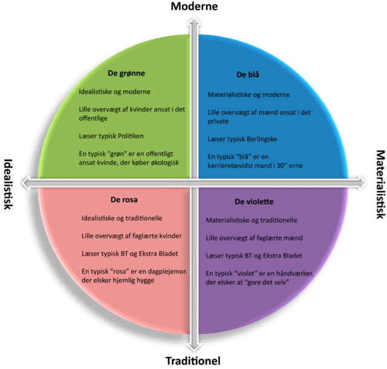
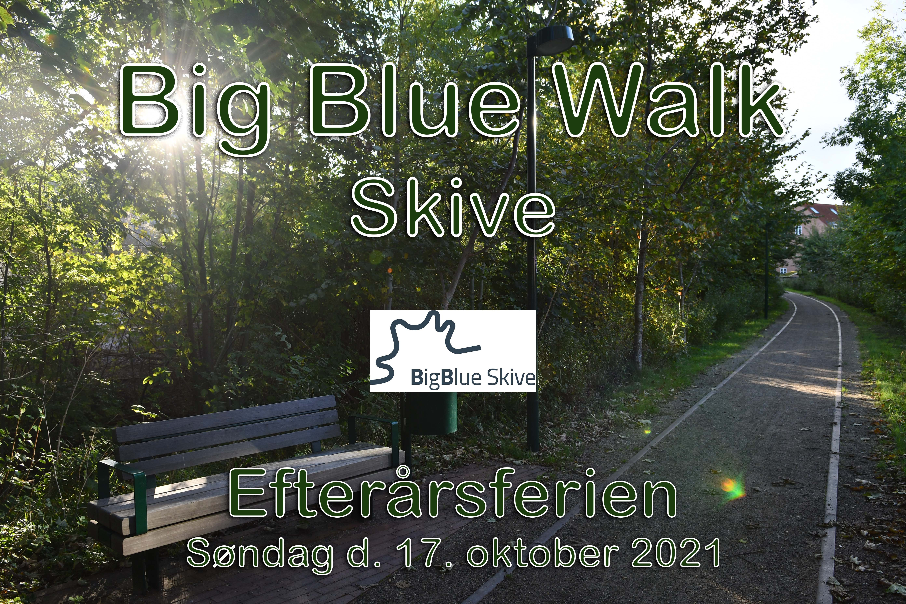

SoMe
Som optakt til vores projekt om SoMe-projekt, blev vi introduceret til begrebet branding:
For især større virksomheder er ikke kun navn, logo og fysiske produkter vigtige, det er også de værdier vi tillægger deres brand. Så uanset om brandet findes i tryksag, på website, i tweet eller i en simpel kundesamtale, ønsker man at udtrykke samme ”stemme/tone” overfor modtageren – kommunikationen skal på alle punkter udtrykke det samme.
Selve virksomhedens visuelle identitet kan være udformet i en designmanual, hvori man beskriver de værdier, holdninger og æstetik brandet skal udtrykke – dette kan være såvel på et overordnet plan som for hvert enkelt produkts design.
Et eksempel er ”Google Material Design”, der er frit tilgængelig online, og som man kan låne fra.
Også når det gælder SoMe-kanalerne, har de fleste virksomheder indset nødvendigheden af at være aktive på flere platforme og lægge langsigtede strategier. Først afklares virksomhedens formål med tilstedeværelsen på de online medier, så defineres og segmenteres dens målgruppe og de mest relevante kanaler udvælges, og til sidst tilpasses indholdet præcist hertil (model for digital strategi, Online kommunikation, Hans Christian Christiansen p 382).
For at kunne brande et produkt, er vi nødt til at kende modtageren, og som multimediedesignere har vi brug for korte og operationelle beskrivelser af brugerne, der hjælper med til at gøre designopgaven konkret. Her er nogle gode redskaber til at undersøge vores brugere:
Til dette formål kan user stories være en hjælp, altså udsagn/ønsker fra brugere, efter dette tredelte format: Som (rolle) vil jeg (opgave), så jeg (fordel). Eksempel: Som mor vil jeg gerne have overblik over, hvilke lektier mit barn har for, så de bliver lavet rettidigt. Her får vi svar på vigtige data om hvem brugeren er, formålet med interaktionen og brugerens motivation.
Denne model giver et generaliserende billede af danskerne som helhed, og bygger på en meget omfattende livsstilsundersøgelse. Den bliver især brugt i politisk og erhvervsmæssigt øjemed, og typisk er reklamer for større virksomheder rettet direkte mod et af disse segmenter (blå, grøn, violet, rosa), da de fleste reklamebureauer kender modellen.
CASE: I grupper skulle vi markedsføre en hårshampoo til de 4 forskellige segmenter i Minerva-modellen. Eksempelvis ville vi til den blå type lave et eksklusivt design på flasken (mørke farver og sølv). Desuden fortælle at den er fremstillet af de allerbedste råvarer, der behandler huden skånsomt, og så ville vi få Jesper Buch til at nævne den på LinkedIn.

Hvert segment i modellen repræsenterer en typisk del af den danske befolkning – farverne er valgt for overblikkets skyld. Overordnet kan man lave følgende overskrifter:
Blå segment: Materialistiske individualister
Grønne segment: Solidariske individualister
Violette segment: Traditionelle materialister
Rosa segment: Traditionelle idealister
En persona er en fiktiv person, som repræsenterer en målgruppe, og hjælper bl.a. marketingfolk og designere med at forstå netop denne type mennesker. Ud fra indsamlede empiriske data kan man så målrette salg mod en bestemt kundegruppe – f.eks. ud fra parametre som alder, køn, erhverv, vaner osv.
CASE: Her skulle vi udarbejde personaer til markedsføringen af vores hårshampoo. Til det grønne segment opfandt vi (med foto) Anne-Sofie Petersen, 34 år, jobkonsulent. Civilstatus: Fraskilt og gift igen. Bopæl: Risskov. Adfærd: Går på cafe med veninderne og drikker øko-kaffe. Nyhedskilder: TV og netflix.
Miniguide om brugere på SoMe-kanaler:

Vores Social Media-projekt handlede om at brande Big Blue Skive, som er en igangværende udviklingsplan for Skive, bl.a. tegnet af et berømt arkitektfirma ”BIG”. Det skulle udformes som et website og indeholde en brandingstrategi til 5 SoMe-kanaler samt indeholde fotos, video og tekst.
Vi valgte en strategi, som gik ude på at invitere borgerne i Skive og omegn ud at se disse rekreative områder, hvilket vi ville gøre med en gåtur i efterårsferien med overskriften: Big Blue Walk. Dels er vandring oppe i tiden og populært, og dels appellerer det til alle aldre.
Med medierne Facebook, Instagram, Youtube, TikTok og LinkedIn regnede vi med samlet at nå bredest muligt ud.
Den efterfølgende uges arbejde resulterede i vores blå website BIG BLUE WALK: